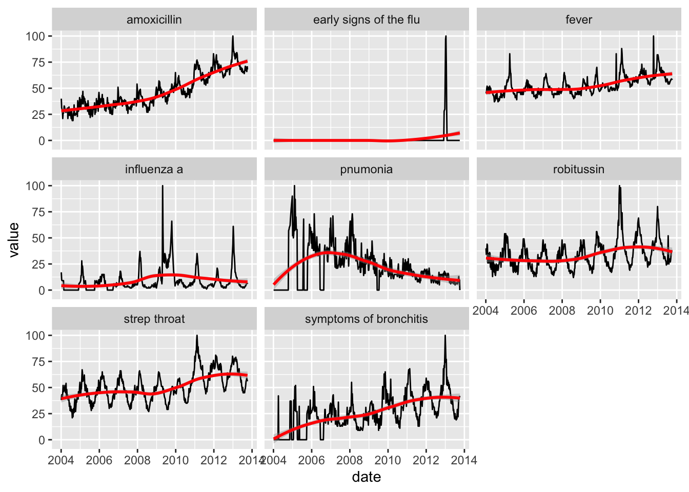
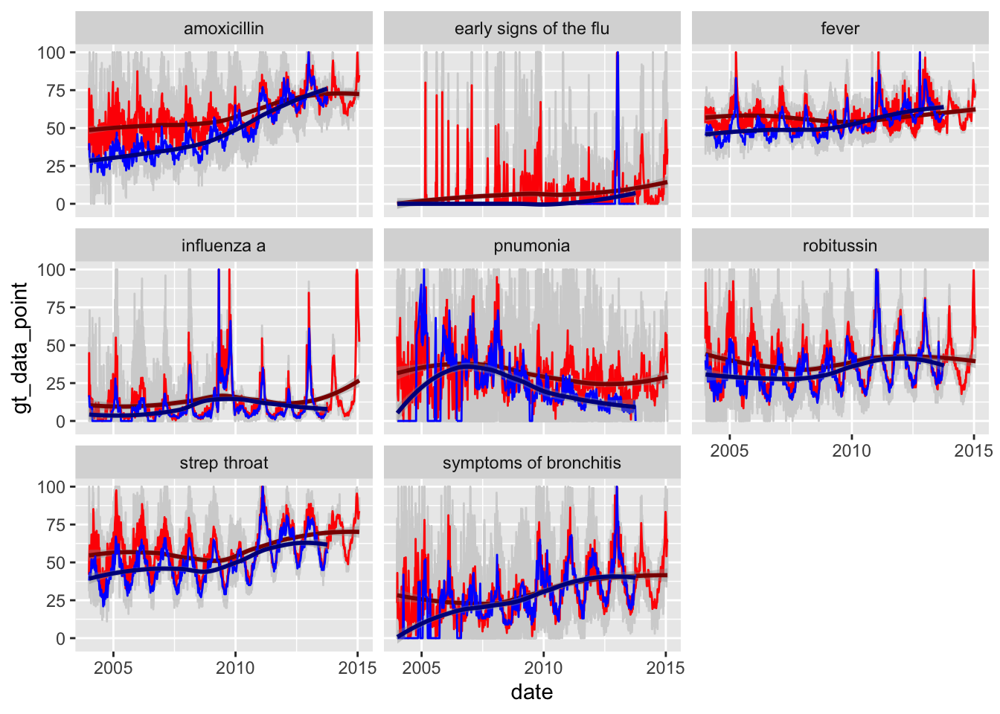

library(knitr)
opts_chunk$set(tidy.opts=list(width.cutoff=60),tidy=TRUE)Google Trends Verification Study (Parable of Flu Analysis)
Replicating Parable of Google Flu Analysis
Importing Data
library(tidyverse)
setwd('/Users/natan/Desktop/usyd/2022/sem 2/scdl3991/flu paper analysis')
fig10 = read_csv("abdominal pain(Fig S10).csv")
fig15 = read_csv("SFig15.csv")
glimpse(fig10)Rows: 121
Columns: 2
$ Month <chr> "2004-01", "2004-02", "2004-03", "20…
$ `abdominal pain on my right side` <dbl> 0, 0, 0, 0, 0, 0, 0, 0, 0, 0, 0, 0, …glimpse(fig15)Rows: 510
Columns: 9
$ Week <chr> "1/4/2004", "1/11/2004", "1/18/2004", "1/25/2…
$ amoxicillin <dbl> 40, 31, 30, 29, 21, 26, 26, 29, 33, 32, 29, 3…
$ `early signs of the flu` <dbl> 0, 0, 0, 0, 0, 0, 0, 0, 0, 0, 0, 0, 0, 0, 0, …
$ fever <dbl> 45, 46, 49, 52, 48, 47, 51, 48, 47, 45, 52, 5…
$ `influenza a` <dbl> 17, 10, 9, 9, 9, 9, 9, 0, 0, 0, 0, 0, 0, 0, 0…
$ pnumonia <dbl> 0, 0, 0, 0, 0, 0, 0, 0, 0, 0, 0, 0, 0, 0, 0, …
$ robitussin <dbl> 40, 34, 36, 44, 43, 26, 26, 35, 26, 31, 36, 3…
$ `strep throat` <dbl> 38, 43, 41, 41, 45, 52, 46, 49, 47, 49, 52, 4…
$ `symptoms of bronchitis` <dbl> 0, 0, 0, 0, 0, 0, 0, 0, 0, 0, 0, 0, 0, 42, 0,…Cleaning Data
fig10$Month1 = fig10$Month
fig10 <- fig10 |> select(-Month)
fig10 = transform(fig10,month=substr(Month1,6,7),year=substr(Month1,1,4))
fig10 = fig10 |> select(-Month1) |> janitor::clean_names()
fig10$day = 1
fig10$date <- as.Date(paste(fig10$year, fig10$month,fig10$day, sep="-"), "%Y-%m-%d")
fig10 = fig10|> select(abdominal_pain_on_my_right_side, date)
fig15 = fig15 |> mutate(date = as.Date(Week,"%m/%d/%Y")) |> select(-Week)
fig15_long <- gather(fig15, term, value, amoxicillin:`symptoms of bronchitis`, factor_key=TRUE)Replicating Fig.10 Plot
library(ggplot2)
fig10 |> ggplot() + aes(x = date, y = abdominal_pain_on_my_right_side) + geom_line() + xlab("Date") + ylab("GT Abdominal Pain Value") + ggtitle("Fig.10 Searches for “abdominal pain on my right side.”")
Replicating Fig.15 Plot
library(ggplot2)
fig15_long |> ggplot() + aes(x=date,y=value) + geom_line() + geom_smooth(method = "loess", col = 'red')+ facet_wrap(~term)`geom_smooth()` using formula 'y ~ x'Replicating Parable of Google Flu Analysis with our Data
Importing Data
library(tidyverse)
df_final = read_csv("Parable.csv")Rows: 2742265 Columns: 9
── Column specification ────────────────────────────────────────────────────────
Delimiter: ","
chr (7): Region, Term, Project, Date, ExtractionDate, StartDate, EndDate
dbl (2): fileno, GT_data_point
ℹ Use `spec()` to retrieve the full column specification for this data.
ℹ Specify the column types or set `show_col_types = FALSE` to quiet this message.glimpse(df_final)Rows: 2,742,265
Columns: 9
$ Region <chr> "US", "US", "US", "US", "US", "US", "US", "US", "US", "…
$ Term <chr> "abdominal pain on my right side", "abdominal pain on m…
$ Project <chr> "Parable", "Parable", "Parable", "Parable", "Parable", …
$ fileno <dbl> 5169, 5119, 4919, 6028, 3272, 8622, 3836, 4213, 4598, 8…
$ Date <chr> "01JAN2004", "01JAN2004", "01JAN2004", "01JAN2004", "01…
$ ExtractionDate <chr> "26MAY2021", "27MAY2021", "29MAY2021", "31MAY2021", "01…
$ StartDate <chr> "01JAN2004", "01JAN2004", "01JAN2004", "01JAN2004", "01…
$ EndDate <chr> "31JAN2014", "31JAN2014", "31JAN2014", "31JAN2014", "31…
$ GT_data_point <dbl> NA, NA, NA, NA, NA, NA, NA, NA, NA, NA, NA, NA, NA, NA,…Cleaning Data
library(janitor)
Attaching package: 'janitor'The following objects are masked from 'package:stats':
chisq.test, fisher.testdf_final$date = as.Date(df_final$Date,"%d%b%Y")
df_final$extraction_date = as.Date(df_final$ExtractionDate,"%d%b%Y")
df_final <- df_final |> na.omit(Date) |> na.omit(GT_data_point)|> distinct() |> select(-c('StartDate','EndDate','fileno','ExtractionDate','Date','Region','Project')) |> janitor::clean_names()
# df_final <- df_final |> clean_names() |> arrange(region,term, extraction_date, date) |> group_by(region,term,date) |> dplyr::mutate(id = row_number()) |> filter(id <= 128) |> select(-id)Checking Cross Tabulations (Needs to be redone)
## How many date obtained for each region and term_topic
df_final_agg <- df_final %>% dplyr::group_by(term, date) %>% dplyr::summarise(n_distinct(extraction_date))
## How many gt_values for each date obtained
df_final_agg2 = df_final |> dplyr::group_by(term,extraction_date) |> dplyr::summarise(count=dplyr::n())
write.csv(df_final_agg,"df_final_agg.csv", row.names = FALSE)
write.csv(df_final_agg2,"df_final_agg2.csv", row.names = FALSE)Replicating Fig.10 with our data
df_final_fig10 = df_final |> filter(term == 'abdominal pain on my right side') |> select(-c('term'))
df_final_fig10_wide = spread(df_final_fig10, extraction_date, gt_data_point)
df_final_fig10_wide$mean = rowMeans(as.matrix(df_final_fig10_wide[,c(2:length(df_final_fig10_wide))]), na.rm =TRUE)
df_final_fig10 = merge(df_final_fig10_wide,fig10,all.y=TRUE)
df_final_fig10$paper_data = df_final_fig10$abdominal_pain_on_my_right_side
df_final_fig10 <- df_final_fig10|> select(-abdominal_pain_on_my_right_side)
df_final_fig10_col <- df_final_fig10|> select(c(date,paper_data,mean))
df_final_fig10_reshaped <- reshape2::melt(df_final_fig10, id.vars="date")
df_final_fig10_reshaped_col <- reshape2::melt(df_final_fig10_col, id.vars="date")
p1 = ggplot(df_final_fig10_reshaped) +
geom_line(aes(x=date,y=value),color = "lightgrey")
p1 = p1 + geom_line(data =df_final_fig10_reshaped_col,aes(x=date,y=value, col = variable),size=0.8)Replicating Fig.15 Plot with our data
library(ggplot2)
df_final_fig15 = df_final |> filter(term !='abdominal pain on my right side') |> filter(term !='flu')
p5 = df_final_fig15 |> ggplot() + aes(x = date,y=gt_data_point) + geom_line(col = 'lightgrey') + facet_wrap(~term)
df_final_fig15_means = df_final_fig15 |> group_by(date,term) |> mutate(mean = mean(gt_data_point)) |> select(term,date,mean) |> distinct()
p5 = p5 + geom_line(data =df_final_fig15_means, aes(x=date,y=mean), col = 'red')
p5 = p5 + geom_smooth(data =df_final_fig15_means, aes(x=date,y=mean),method = "loess", col = 'darkred')
p5 = p5 + geom_line( data =fig15_long ,aes(x=date,y=value), col = 'blue')
p5 = p5+ geom_smooth(data =fig15_long, aes(x=date,y=value),method = "loess", col = 'darkblue')
p5`geom_smooth()` using formula 'y ~ x'
`geom_smooth()` using formula 'y ~ x'